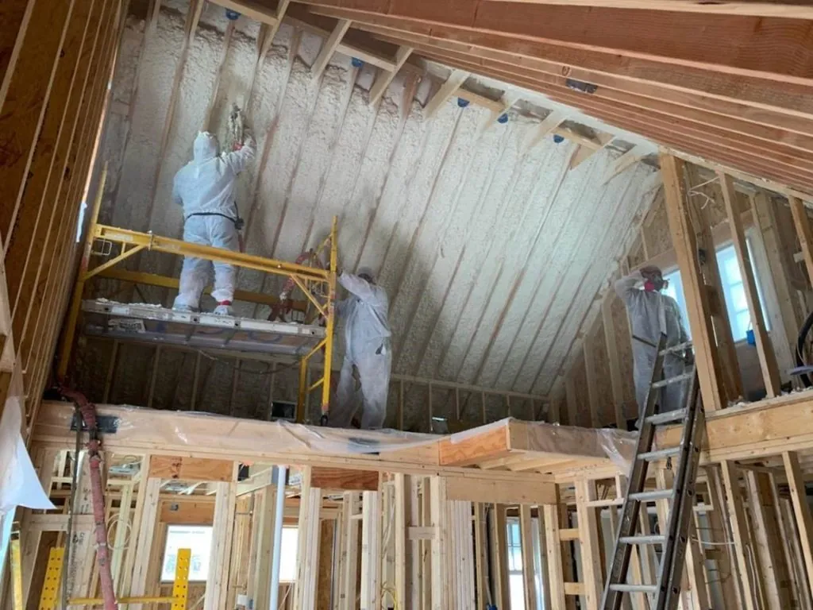
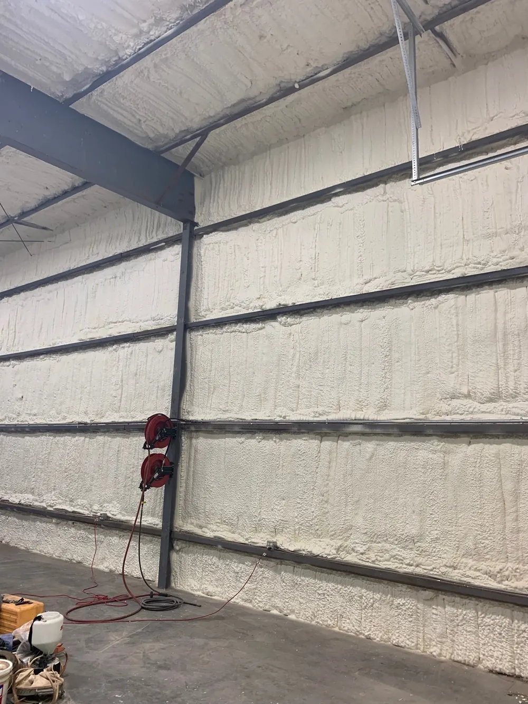

Residential & commercial
Spray foam
insulation.
Send a plan, a photo, or a few words about the building. We’ll help you work out where insulation makes sense and what we need to price it.

South Carolina · North Carolina · Georgia · Tennessee
Coverage and scheduling are confirmed for each project.
What are you
working on?
Find what to send for a home project or a commercial bid.

Commercial projects
Current plans, specifications, addenda, requested scope and bid timing.

Homes and renovations
Photos, plans, dimensions and the problem you want to solve.

Air sealing and encapsulation
Drafts, crawlspaces or moisture concerns?
Describe the space, what you have noticed and any known water or access issues.
Project review
What happens after you get in touch?
You do not need to choose a foam product or thickness before contacting Blue Star.
Send plans or project details- 1
Describe the project.
Add plans or photos, a surface-area estimate, a shared-file link or a short description. Include the project location and your contact information.
- 2
Clarify the scope.
Josh reviews the project for Blue Star, including the proposed surfaces, visible conditions, issued requirements and unanswered questions.
- 3
Choose the right next step.
Depending on the information available, that may be a scope discussion, estimate, site visit or written proposal.
Which square footage counts?
To estimate a job, we need the area the foam will actually cover. A wall 40 feet long and 12 feet high has 480 sq ft of gross surface area before subtracting openings.
Add the wall, ceiling, roof or floor faces that may need foam. Count a floor only when it is one of those faces. If you know only the building footprint, say that in the description and leave the surface-area field blank.
Help me work out the surface areaDo I need to choose open-cell or closed-cell foam?
No. Send information about the building and the result you need. The assembly, available depth, moisture conditions and project requirements should be reviewed before a product or thickness is recommended.
What if I do not have drawings or measurements?
Start with the project location and a short description. Photos help when they are available. Blue Star will identify what information is useful next.
Will the website give me an instant price?
No. A useful price requires a defined scope. Blue Star reviews the submission first, then may discuss an estimate, arrange a site visit or prepare a written proposal. Sending files does not reserve a date.
Which square footage should I send?
If you know it, send the combined area of the wall, ceiling, roof or floor surfaces to be sprayed. If you know only the building footprint, say so in the description and leave the surface-area field blank.
Where does Blue Star work?
Blue Star is based in Greer, South Carolina, and lists South Carolina, North Carolina, Georgia and Tennessee as its service area. Send the project location so coverage, travel and availability can be confirmed.